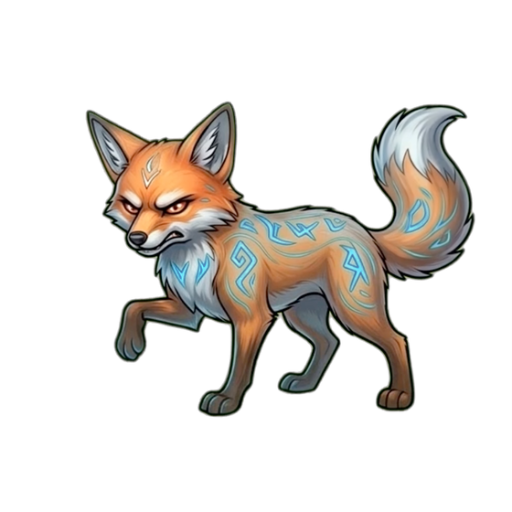
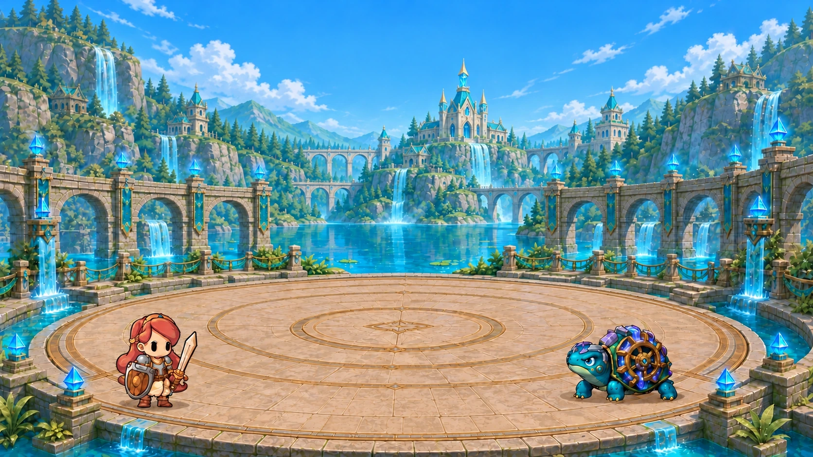
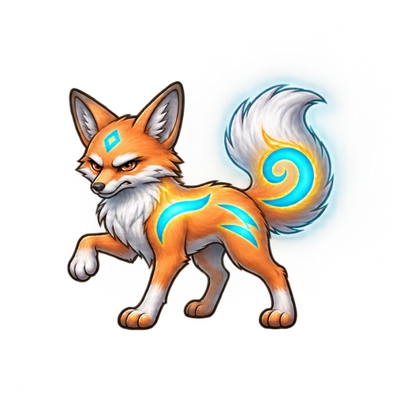

Stejná liška. Silnější runy.
Vzhled roste s novými stupni rychlosti. Dosavadní útok +1 zůstává u původních výzev.

Porovnání s původním snímkem. Návrhy zachovávají charakter; před výrobou animací ještě vyžadují přesné sjednocení proporcí.
Tři schopnosti, tři stupně
Stupeň mění účinek. Každá schopnost má stále jedno použití za souboj. Klepnutím si vyber kombinaci pro náhled.
V bojovém měřítku
Buňka 512 px × škála 0,25 = 128 herních pixelů. Náhled se přizpůsobí šířce tabletu. Pohyb lišky zde není simulovaný.

 Runová liška
Runová liška
Stejné měřítko vedle sebe
Jedno tělo, kombinovatelné schopnosti
Ukázka: štít II + léčení I + runový útok III. Vypni jednotlivé vrstvy nebo klepni na symbol.
Tělo
Tři podoby srsti a velkých run. Stejná postava pro všechny kombinace.
Runy
Štít, srdce a blesk. Vlastní obrázek každého stupně, společné rámy a světlo.
Krátký efekt
Ochrana, srdce k hrdinovi, zásah nepřítele. Efekt se přidá až při použití.